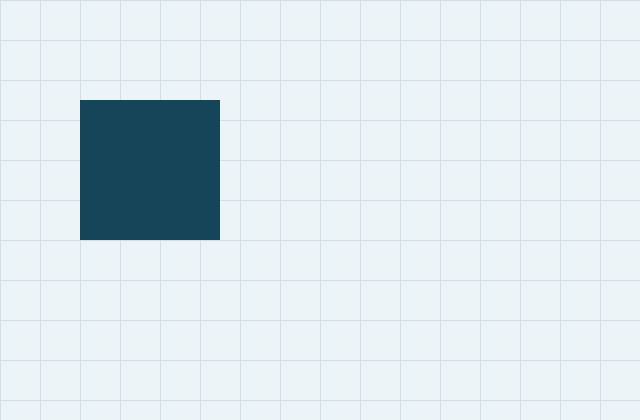
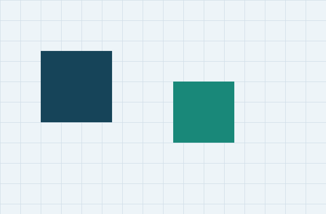
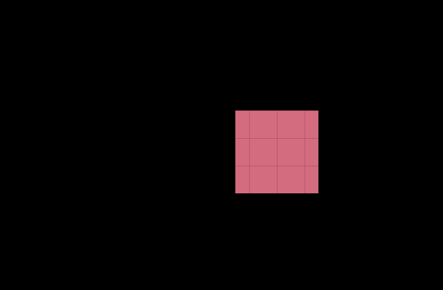
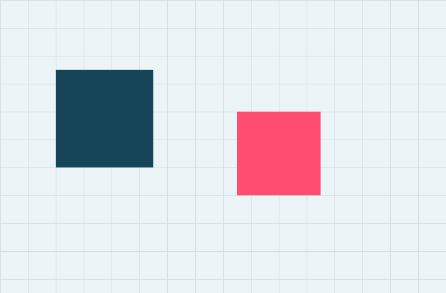

Aligned pixels. Explicit thresholds. Reproducible evidence.
Changed pixels: 14400 / 268800 · Threshold: 25 · Changed area: 5.36%




Pixel differences are not object detection. Camera movement, shadows and exposure changes can dominate this result. Bounding box coordinates use exclusive right/bottom bounds.
Download metrics JSON